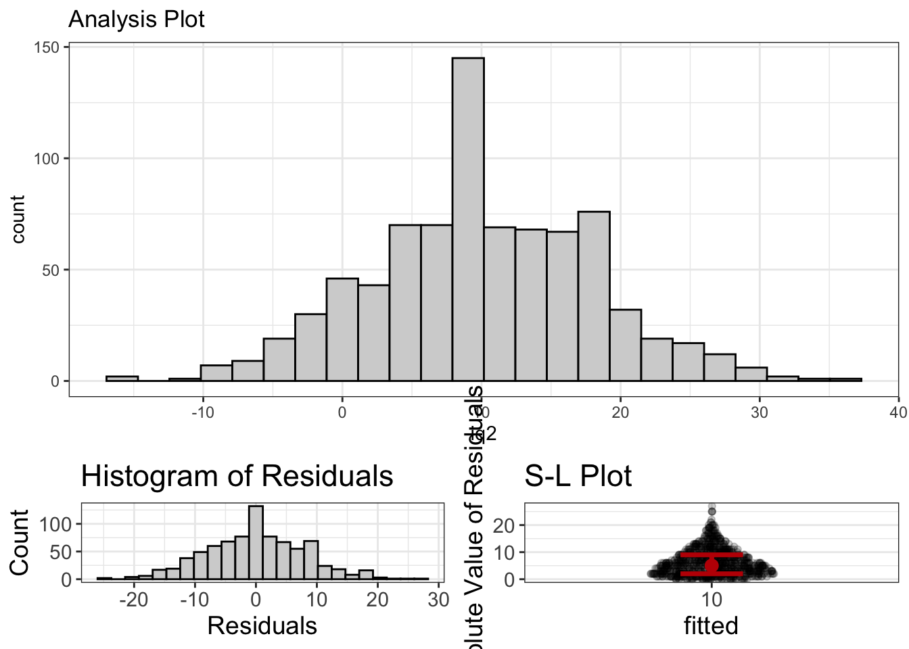
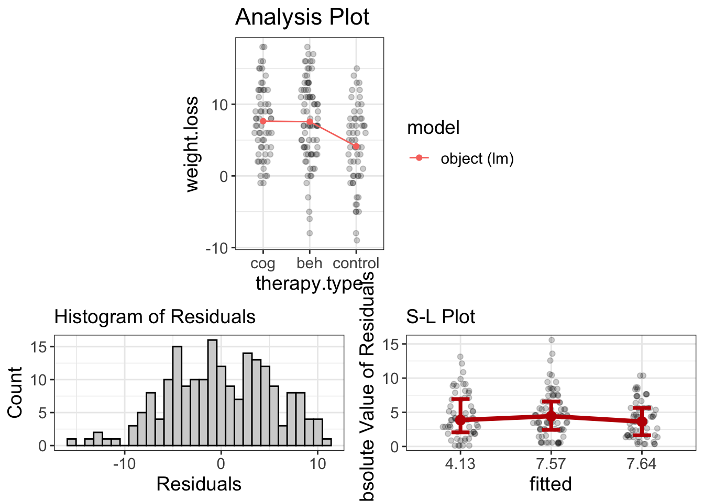

Chapter 9 The Linear Model
9.1 Wax on, wax off
Have you ever seen the movie Karate Kid? That came out when I was a young’n and my best friend and I would watch that movie, over and over, then launch through the air, round-house kicking imagined foes.
’Twas a classic.
To summarize, the main character, Daniel LaRusso faces bullies after moving to a new school, so he seeks to learn Karate from his neighbor, Mr. Miyagi. Miyagi begins Daniel’s training by having the boy do a boat-load of menial chores: painting a fence, sanding a floor, and waxing a car. Weeks go by until Daniel, frustrated, threatens to quit. He’s tired of doing chores and wants to learn to fight.
Little did Daniel know, Miyagi was teaching him to fight. The motions of painting, sanding, and waxing had developed muscle memory, which enabled him to miraculously and somewhat autonomously block hits from his opponents.
Wax on. Wax off.
I loved this idea because I despise complexity and am easily overwhelmed by details. The thought that I could, from just a few core motions, master the art of self-defense was exhilarating.
I suppose that’s how my mind naturally works. I want to believe that complexity only exists because we fail to see the simplicity. Sure, you can master Karate by learning hundreds of moves. But who wants to do that? If it’s really just variations on a few basic moves, shouldn’t we approach it that way instead?
It seems that, for decades, we have been teaching and learning statistics as if it were a random collection of hundreds of Karate moves, with no semblance of simplicity.
What are these karate moves? T-tests, ANOVAs, Factorial ANOVAs, regression, multiple regression, factor analysis, structural equation modeling, mixed models, chi squares, log linear models, ….
And the list goes on. And on. And on.
That’s the old way. That’s the way that favors memorizing large lists of information.
But I’m going to give you the “Wax on, wax off,” of statistics: the linear model.1
Nearly every single statistical procedure is just a different variation of the linear model.
Actually, I think that deserves a tweet-worthy decoration:
Nearly every single statistical procedure is just a different variation of the linear model.
So, let me ask you. Would you rather have a sensei that teaches you the muscle memory of a handful of core moves? Or would your rather learn hundreds?
That’s what I thought.
Before I talk about the linear model, let’s have a conversation about what a model is.
9.2 What is a model?
When you think of a model, what comes to mind? Perhaps a fashion model? Or a model airplane or model car? Or perhaps a model citizen.
So what is a model?
A model is a representation of something else. This representation retains essential elements, while ignoring non-essential details.
A fashion model is a representation of beauty. It represents the essentials of what we consider beautiful, while excluding other features of what might be considered beautiful. A model airplane contains the essential shape. proportions, and color of a real airplane, but it’s ignores nonessential details (like the ability to fly or carry passengers). A model citizen exhibits the essential behaviors of what makes a good citizen (e.g., law-abiding, civic responsibility, community participation), while ignoring non-essentials (e.g., hair color, profession, family size).
Likewise, a statistical model is a mathematical representation of reality. This model ignores nonessential information. This model seeks to capture the patterns, while ignoring the noise. T-tests are models. ANOVAs are models. Regressions are models. Each of these capture some “signal” (e.g., a mean difference between groups, a slope, a correlation coefficient), while ignoring the noise (e.g., deviations of each score from their mean).
But, all these different statistical models can be considered as different variations of the linear model.
9.3 What is the Linear Model?
You’ve already seen this, by the way. There’s nothing new here; we’re just conceptualizing it slightly differently.
The linear model is simply an algebraic equation that has the following form:
\[y = \text{intercept} + \text{slope(s)} \times \text{predictor(s)} + e\]
Remember that? Yes, it was the equation for a line, though before we were a bit more technical: \(y = b_0 + b_1\times X + e\).
But there’s another way of thinking about it:
\[\text{outcome} = \text{model} + \text{error}\]
In other words, the model is the slope + the intercept.
But there are many other ways to think about it:
\[\begin{align} \text{outcome} &= \text{signal} + \text{noise} \\ \text{reality} &= \text{fit} + \text{residual} \\ \text{what I wanna predict} &= \text{explainable} + \text{unexplainable}\\ y &= \text{essential} + \text{nonessential}\\ \end{align}\]
The linear model decomposes reality into those things our model can explain and those things we cannot. Back in the diagnostics chapter, we already learned why a residual is important, so I won’t go over that again. But, I will say that this simple equation can be used to fit almost any statistical model. We’ll go into more detail later, but the table below summarizes how we can conceptualize the “traditional” procedure as a linear model.
| Procedure | LM Equation | Interpretation |
|---|---|---|
| one-sample t-test | \(y = b_0\) | \(b_0\) (the intercept) is the value we’re testing against |
| independent-sample t-test | \(y = b_0 + b_1\times \text{Treatment}\) | \(b_0\) (the intercept) is the mean of the control group and \(b_1\) is the difference between treatment and control groups |
| related t-test | \(\text{Time}_2 - \text{Time}_1 = b_0\) | \(b_0\) (the intercept) is the average difference from Time 1 to Time 2 |
| ANOVA | \(y = b_0 + b_1\times \text{Treatment A}\) \(+ b_2\times \text{Treatment B}\) |
\(b_0\) (the intercept) is the mean of the control group, \(b_1\) is the difference between Treatment A and the control, and \(b_2\) is the difference between Treatment B and the control. |
| ANCOVA | \(y = b_0 + b_1\times \text{Covariate}\) \(+ b_2\times \text{Treatment}\) |
\(b_0\) (the intercept) is the mean of the control group, \(b_1\) is slope of the covariate, and \(b_2\) is the difference between the Treatment and the control group. |
| Factorial ANOVA | \(y = b_0 + b_1\times \text{Treatment}\) \(+ b_2\times \text{Female}\) \(+ b_3\times \text{Female}\times \text{Treatment}\) |
\(b_0\) (the intercept) is the mean of the men in the control group, \(b_1\) is the difference between Treatment and control, \(b_2\) is the difference between Males and Females, and \(b_3\) is the difference between females in the treatment group and males in the control group. |
Not only are the more traditional procedures all different versions of the linear model, but advanced procedures are also part of the LM. Structural Equation Modeling (SEM) is just a bunch of regression equations stringed together. Mixed models are regression models that essentially fit different slopes for each cluster, logistic regression is regression on a logit scale, and poisson regression is regression on a log scale.
It’s all the same thing.
Figure 9.1: This diagram shows the old way of doing things. It is hopelessly complicated and it is much better to just use a linear model.
Why is that important? Because you don’t have to memorize complex decision trees with awkward rules to remember what statistical model you need to use (like the image above). It simplifies things immensely. You really just have to know which variables you want to predict (i.e., which variable is your outcome or dependent variable) and which variable(s) you use to predict (e.g., IQ, SES, male versus female, treatment versus control). BTW, see the note box below.
When we talk about groups (e.g., treatment versus control, males versus females, freshman versus seniors), we typically say that we’re interested in estimating group differences. However, you could also use different language and say that group membership predicts scores on the outcome variable. There is absolutely no difference mathematically between estimating group differences and predicting an outcome. It’s only a psychological difference.
I’ve often been chided by non-statistician colleagues for my loose use of language. “No,” they’ll insist, “it is not appropriate to refer to group membership as a predictor.”
Umm…no. It makes no mathematical difference, so why are we squabbling over semantics?
Also, there’s an advantage to referring to grouping variables as predictors; once you realize there’s nothing special about categorical variables, it simplifies decision-making. Once again, we just have to figure out which variable(s) are the predictors and which is the outcome.
9.4 What makes a good statistical model?
So, we have established the linear model (LM) is the big daddy of statistics; it can be used to fit most statistical models and makes it much easier to select the right procedure.
How do you determine whether a model is good or not?
Well, it turns out that’s a bit hard to do. Many methodologists and philosophers of science have suggested several criteria using fantsy pantsy words nobody knows, like fitting propensity, identifiability, fungibility, etc. I’m not going to go into those. Instead, I’ll talk about one criteria everybody agrees is important: fit.
The model must fit the data. Or, the model must be at least somewhat representative of reality. If you have a model airplane that looks like a hotdog, it’s a poor model. Likewise, if you have a statistical model that doesn’t fit the data, it’s pretty useless.
“Alright,” you say, “so how, good sir, do we go about determining whether the model fits the data?”
Excellent question. And the answer is quite simple: you’ve been doing it all along.
- You assess fit with visualizations, looking for evidence of patterns
- You assess fit by computing effect sizes and determining whether they’re strong enough to keep
- You assess fit by evaluating diagnostics, ensuring the assumptions of the model have been met
- You assess fit by computing statistical significance (if you’re a frequentist) or by computing a Bayes Factor (if you’re a Bayesian). (We’ll get into how to do this once we get to probability).
In other words, this textbook is an instruction manual that tells you how to determine whether your model fits! I bet you didn’t see that twist coming!
And, by couching most statistical models within the LM, we have a common method of determining whether the model fits. All we have to do is plug in our predictor(s) and specify our outcome variable, then let the software generate visuals, effect sizes, and probability estimates.
Then we be in bid’ness.
The next couple of sections are going to apply the LM to fit various types of statistical models. But really, you’ve already done the hard work. The next few sections are simply going to assemble all the pieces together, using the LM.
9.5 Prediction Versus Group Differences
Often we’re interested in seeing how two groups differ on some outcome. Maybe we want to if those who like eggplants are less intelligent than those who don’t. (Eggplants are gross). Or perhaps you want to demonstrate that statisticians are way smarter than accountants. Ooh, that reminds me of a joke:
What’s the difference between a statistician and an accountant?
Statisticians like numbers but didn’t have enough personality to be accountants.
In both of these cases, we’re comparing two groups on some outcome. But, remember, you could just as easily say that group membership (e.g., statisticians versus accountants, or those who like versus dislike eggplants) predicts scores. The math is the same. (Read the above rant box if you want more information.)
Lot’s of questions can be answered with the LM, including….
| Group Means Language | Predictor Language |
|---|---|
| How do nerds versus jocks compare in average income later in life? | How does nerd versus jock status predict income? |
| Is it quicker to fry an ant with a magnifying glass or matches? | How does method of frying (magnifying glass versus matches) predict time to ant combustion? |
| If I fast before Thanksgiving dinner, can I eat more than if I snack throughout the day? | How does the state of my stomach (fasting versus snacking) predict consumption on Thanksgiving? |
Once again, the language doesn’t matter. When you realize it doesn’t matter, then it’s easier to transition into thinking about categorical GLMs as same ole same ole regression.
9.5.1 Out with the old, in with the shiny
Just for giggles and gaffes, I’ll go ahead and show you how most people do ANOVA/t-tests, before I go ahead and show you the light of the LM.
Step 1: count the number of groups. If there’s more than two, do an ANOVA. Otherwise, do a \(t\)-test
Step 2: Set up a null and alternative hypothesis. For ANOVA, test whether there’s some difference somewhere between groups. For t-test, test whether the groups are equal.
Step 3: If groups > 3 and there’s a significant p-value, perform post-hoc tests to see where that difference is.
Step 4: Make conclusions.
Hmmm….that’s more complicated than it needs to be, and it’s really not that informative. There’s no graphics. There’s no evaluation of model assumptions. There’s no estimates computed.
If I wished to be fair (which I don’t), other textbooks may mention estimates and/or graphics and/or assumptions. Yet these activities never seems to make it to the step-by-step process of doing significance testing. Go ahead, read any intro stats book and there will likely be a four or five step procedure for doing a \(t\)-test or ANOVA. I’m willing to bet very few of them mention graphics, estimates, or diagnostics. These books might stress the importance of these things, but they never show you how they fit within the process.
Have I sold you on my approach yet? If not, that’s impressive you’ve gotten this far and still haven’t bought into it yet. Kudos to you.
And what is the step-by-step procedure of the LM way?
(By the way, this is [loosely] based on a paper I wrote called The Eight Steps of Data Analysis, and that paper served as the basis for the organization of this textbook. Neat, eh? Not all eight steps are included because one of the steps, evaluating the measurement model, is beyond the scope of this text.)
Step 1: State theoretical hypothesis
Step 2: Visualize univariate distributions
Step 3: Visualize the statistical model
Step 4: Evaluate diagnostics
Step 5: Study estimates
Step 6: Compute probability estimates (p-values, Bayes Factors)
Notice there are no conditional statements in there; you don’t have to count the number of groups, number of predictor variables, determine type of predictor variable, etc. These steps are always used, no mater whether you have two groups or three, categorical predictors or numeric, whether it’s Monday or Wednesday or your birthday.
Wax on/wax off. I just taught you the basic moves. And these moves will help you win any statistical ninja competition. After doing these steps, you will know far more than any student taught using the crappy old method. You will be far less likely to be deceived and do better science.
How’s that for a sales pitch? (Too bad I don’t make any money off of book sales).
And how, you might ask, are we possibly able to condense all the complexity of statistical models into the same six steps?
We use the linear model. Remember that the LM doesn’t care whether you have numeric or categorical predictor variables.
Now, let’s go ahead and go through all the types of procedures you might do and show how to do it using the LM approach.
9.6 One-Sample T-Test
Is this group taller than 5’5”?
Does this classroom score higher than 75 on the exam?
Are engineers smarter than the population average?
These are all questions that are traditionally answered using a one-sample t-test (OST). For a OST, we have a group and we want to see if that group’s score is different than a specific value. These tests aren’t very common, but I’ll show you how to do them anyway.
What is a p-value?
In the next few sections, I’m going to show you how to do various analyses from both the LM approach and the traditional approach. Throughout, I’m going to be computing p-values and statistical significance.
Alas, we haven’t yet gotten to the probability chapters yet, so I haven’t yet gotten in depth into what a p-value is. But, I’ll give you a brief overview here. When computing a p-value, we are trying to test two hypotheses: a null hypothesis and an altnernative hypothesis. A null hypothesis predicts nothing is going on (e.g., group means are no different, two variables are not associated). The alternative predicts the opposite of that.
The idea behind a p-value is that we assume the null hypothesis is actually true. In other words, we assume there’s no association between our predictor and outcome variable. We then compute the probability of obtaining our particular estimate (e.g., correlation coefficient or mean difference), under the assumption that the null hypothesis is actually true. If we get a small p-value, that suggests it is unlikely these estimates (again, correlations, mean differences, etc.) are probably different from zero.
Traditionally, if the p-value is less than 0.05, we deem the results “statistically significant.”
9.6.1 Traditional Analysis
If you wanted to a t-test in R, you would do something like this:
require(flexplot)
data('avengers')
t.test(avengers$iq, mu = 100)#>
#> One Sample t-test
#>
#> data: avengers$iq
#> t = 35.556, df = 811, p-value < 2.2e-16
#> alternative hypothesis: true mean is not equal to 100
#> 95 percent confidence interval:
#> 109.4479 110.5521
#> sample estimates:
#> mean of x
#> 110That there is testing whether the mean IQ in our dataset (which, in this case is 110) is different from mu, which we specified as 100. In other words, 100 is our null hypothesis. Because \(p\)<0.05, our group’s IQ is considered “statistically significantly different from 100.”
9.6.2 One-Sample T-Test as a LM
So, how do we do this using the LM? It’s quite easy, but we do have to make one small modification. As far as I know, there’s no way to tell R’s lm function you want to test against a specific value (like we tested against 100 with the t.test). It’s always going to test against zero. For that reason, we need to subtract the score we want to test against (100 in this case) from the scores. Then, with these new scores, testing against 0 with these new scores is the same as testing against 100:
# create a new iq variable that subtracts 100 (the tested value)
# from the actual iq scores
avengers$iq2 = avengers$iq - 100
t_test_model = lm(iq2~1, data=avengers)So, something a little funky just happened. When we’ve done lm in the past, we’ve always had an equation that had the outcome on the left side and the predictor on the right side (like outcome~predictor). Now, however, we don’t have any predictors (outcome~1, or iq2~1 in this case). What does this mean? This is just how you tell R that you’re fitting what’s called an “intercept-only” model. An intercept-only model means that we’re just fitting a model with a mean. So, long story short, y~1 just tells R we want to compute the mean. It’s an odd way of doing it. (We could, afterall, just type mean(y)). But, using the lm function allows us to access flexplot’s toolset and it gives us more than just the mean.
Now that we’ve fit the model, we can look at the values. Normally I don’t use the summary command because it reports p-values. But, just to show it’s the same as if you did a t-test, let’s look at that:
summary(t_test_model)#>
#> Call:
#> lm(formula = iq2 ~ 1, data = avengers)
#>
#> Residuals:
#> Min 1Q Median 3Q Max
#> -25 -5 0 5 27
#>
#> Coefficients:
#> Estimate Std. Error t value Pr(>|t|)
#> (Intercept) 10.0000 0.2812 35.56 <2e-16 ***
#> ---
#> Signif. codes: 0 '***' 0.001 '**' 0.01 '*' 0.05 '.' 0.1 ' ' 1
#>
#> Residual standard error: 8.014 on 811 degrees of freedomNotice the value of “Estimate” is 10. Remember we subtracted 100 from all the scores, so this tells us the original scores had a mean of 100 + 10 = 110, which is the same value we got earlier. Also, the p-value is the same.
But we can also visualize the model:
visualize(t_test_model)
This shows two histograms. The top one shows the distribution of the raw scores. The bottom-left shows the distribution of the residuals.
In the histogram, we see that most scores are above 100. We can also use the estimates function to get even more information:
estimates(t_test_model)#> Mean Lower Upper d
#> 1 10 9.447941 10.55206 1.247766I know, I know. I’m not making my point very well. Remember, I’m trying to convince you the LM approach is easier, and yet for this analysis, it was more complicated (because we had to subtract 100). But, one-sample t-tests are quite rare. And, almost all the other analyses are far easier to do with a LM.
9.7 Independent Sample T-Test
Is the treatment group different from the control group?
Do males have higher scores than females?
Are statisticians more attractive than non-statisticians? (The answer is emphatically yes).
These are all questions we would typically answer with an independent sample t-test. For these procedures, we want to compute the mean of exactly two groups, then see if those means are different.
9.7.1 Preparing Data for a t-test
There are two common ways of storing data for a t-test. One is called “wide format”:
| group1 | group2 |
|---|---|
| 10 | 15 |
| 9 | 12 |
| 9 | 13 |
| 10 | 12 |
| 9 | 13 |
This method puts each group’s scores in a separate column. Another way to do it is called, “long format”:
| group | scores |
|---|---|
| 1 | 10 |
| 1 | 9 |
| 1 | 9 |
| 1 | 10 |
| 1 | 9 |
| 2 | 15 |
| 2 | 12 |
| 2 | 13 |
| 2 | 12 |
| 2 | 13 |
If I’m remembering correctly, SPSS will make you analyze your data in wide format. With R, you can use either. However, flexplot requires it to be in long format.
Let’s say your data are in wide format, but you need it in long format. How do you do it?
We can use the pivot_longer command in the tidyverse. (If you need help with this, you can watch my video on pivoting.
Let’s say our data from the table above is contained in a dataset called wide_data. To convert it to wide, we would do the following:
require(tidyverse)
long_data = pivot_longer(wide_data,
cols=c(group1, group2),
names_to="Here_Are_My_Groups",
values_to="Here_Are_My_Scores")Here, we specify which columns contain the scores (in our case group1 and group2), as well as the name of the variable that indicates the groups (which we called “Here_Are_My_Groups”) and the name of the variable that indicates the scores (which we called “Here_Are_My_Scores”). After doing that, we should get:
knitr::kable(long_data)| Here_Are_My_Groups | Here_Are_My_Scores |
|---|---|
| group1 | 10 |
| group2 | 15 |
| group1 | 9 |
| group2 | 12 |
| group1 | 9 |
| group2 | 13 |
| group1 | 10 |
| group2 | 12 |
| group1 | 9 |
| group2 | 13 |
For more information on using pivot_longer, you can type ?pivot_longer to access the help menu or see my aforementioned video.
9.7.2 Traditional t-test Analysis
If we did a traditional t-test in R, we would use the t.test command:
t.test(ptsd~north_south, data=avengers)#>
#> Welch Two Sample t-test
#>
#> data: ptsd by north_south
#> t = -8.195, df = 810, p-value = 9.755e-16
#> alternative hypothesis: true difference in means between group north and group south is not equal to 0
#> 95 percent confidence interval:
#> -0.4112410 -0.2523058
#> sample estimates:
#> mean in group north mean in group south
#> 3.834729 4.166502This procedure attempts to determine whether those in the north battle field suffered more ptsd than those in the south battlefield. It seems that there is a statistically significant difference between the two groups. (Woopty doo). And we see there’s a small difference between them in terms of PTSD: 3.83 versus 4.17.
9.7.3 LM Approach
To use the LM approach, we first fit the model:
ind_t = lm(ptsd~north_south, data=avengers)Then we can use the estimates function to get the estimates:
estimates(ind_t)#> Model R squared:
#> 0.077 (0.04, 0.11)
#>
#> Semi-Partial R squared:
#> north_south
#> 0.077
#>
#> Estimates for Factors:
#> variables levels estimate lower upper
#> 1 north_south north 3.83 3.78 3.89
#> 2 south 4.17 4.11 4.22
#>
#>
#> Mean Differences:
#> variables comparison difference lower upper cohens.d
#> 1 north_south south-north 0.33 0.22 0.44 0.58Notice the estimates of the means are identical to the t-test approach. We can also compute a p-value, using the LM approach:
summary(ind_t)#>
#> Call:
#> lm(formula = ptsd ~ north_south, data = avengers)
#>
#> Residuals:
#> Min 1Q Median 3Q Max
#> -2.0347 -0.3665 -0.0347 0.3653 3.2335
#>
#> Coefficients:
#> Estimate Std. Error t value Pr(>|t|)
#> (Intercept) 3.83473 0.02863 133.954 < 2e-16 ***
#> north_southsouth 0.33177 0.04048 8.195 9.76e-16 ***
#> ---
#> Signif. codes: 0 '***' 0.001 '**' 0.01 '*' 0.05 '.' 0.1 ' ' 1
#>
#> Residual standard error: 0.5768 on 810 degrees of freedom
#> Multiple R-squared: 0.07656, Adjusted R-squared: 0.07542
#> F-statistic: 67.16 on 1 and 810 DF, p-value: 9.755e-16And, of course, that p-value is the same as it was before.
But, within the LM framework, we can also visualize it:
visualize(ind_t)
That’s quite a bit more informative!
9.9 ANOVA
Which of my three treatment groups has the least stress?
How does gender (male, female, nonbinary) affect empathy?
Which political party (republican, democrat, independent, libertarian) is the most fiscally conservative?
These sorts of questions are traditionally answered with an ANOVA, which is short for ANalysis Of VAriance.
9.9.1 Traditional Analysis of ANOVA
In traditional stats classes, we were told that we use an ANOVA when we have 3+ groups.
Let’s see how we’d traditionally analyze these sorts of questions. Let’s start with the exercise_data dataset. Here we’re going to analyze see how groups (beh, cog, and control) differ in weight loss:
data('exercise_data')
anova_model = aov(weight.loss~therapy.type, data=exercise_data)
summary(anova_model)#> Df Sum Sq Mean Sq F value Pr(>F)
#> therapy.type 2 505 252.5 8.501 0.000288 ***
#> Residuals 197 5850 29.7
#> ---
#> Signif. codes: 0 '***' 0.001 '**' 0.01 '*' 0.05 '.' 0.1 ' ' 19.9.1.1 Multiple comparisons
This tells us nothing about the group means, but the traditional analysis doesn’t really care about group means. This analysis suggests there’s “some difference somewhere,” but doesn’t tell us where that difference is. Once we conclude statistical significance, we then follow that up with “post-hoc tests,” which attempt to identify where the mean differences are statistically significant:
pairwise.t.test(exercise_data$weight.loss,
exercise_data$therapy.type, p.adj="bonf")#>
#> Pairwise comparisons using t tests with pooled SD
#>
#> data: exercise_data$weight.loss and exercise_data$therapy.type
#>
#> control cog
#> cog 0.0015 -
#> beh 0.0009 1.0000
#>
#> P value adjustment method: bonferroniThis analysis adjusts for p-value inflation using the “bonferroni” method. According to this analysis, the cog versus control and beh versus control differences are statistically significant, but the cog versus behavioral difference is not.
Adjusting for multiple comparisons
What’s the probability of rolling a six? 1/6, right? Of course. Unless you allow yourself to roll the dice multiple times. The idea behind multiple comparisons is the same. Here, we’re using probabilities to make judgments about “statistical significance.” Probabilities can be easily gamed, like in this dice rolling example. Testing each and every possible pairwise comparison between groups (e.g., behaviorist versus control, control versus cognitive, cognitive versus behaviorist) amounts to rolling the dice additional times. For this reason, many recommend we adjust the p-values to reflect the fact that we have “rolled the dice” multiple times.
There’s no universal consensus about how exactly these p-values should be adjusted. There’s the Bonferroni method, the Holm method, the Hochberg method, Tukey’s Honestly Significant Difference, and many others. Some are more conservative than others, but I tend to avoid them. Why? Because most of my research is not strictly confirmatory. Very few people are actually doing strictly confirmatory research, so I think these should be used rarely. Instead, the data should be visualized and one should compute estimates.
9.9.2 ANOVA as a LM
When we use the LM to do an ANOVA, it looks no different than a independent t-test. That’s a pretty big deal, by the way. We don’t have to worry about the number of groups and try to remember what procedure to use when we do have more than three groups. We just specify our predictor and outcome:
anova_model_as_lm = lm(weight.loss~therapy.type, data=exercise_data)We could start by visualizing the data:
visualize(anova_model_as_lm)
It looks like normality and homoscedasticity are viable assumptions (even if the residuals are slightly negatively skewed). It also seems that the cog/beh group both outperform the control in weight loss, but aren’t much different from one another.
Let’s go ahead and compute some estimates:
estimates(anova_model_as_lm)#> Model R squared:
#> 0.079 (0.01, 0.15)
#>
#> Semi-Partial R squared:
#> therapy.type
#> 0.079
#>
#> Estimates for Factors:
#> variables levels estimate lower upper
#> 1 therapy.type control 4.13 2.75 5.52
#> 2 cog 7.64 6.26 9.02
#> 3 beh 7.57 6.36 8.78
#>
#>
#> Mean Differences:
#> variables comparison difference lower upper cohens.d
#> 1 therapy.type cog-control 3.51 0.20 6.82 0.64
#> 2 beh-control 3.44 0.32 6.55 0.63
#> 3 beh-cog -0.07 -3.17 3.03 -0.01It seems those in the control lost an average of 4.1, while the beh and cog groups are 7.6 and 7.6, respectively. Also, the beh/cog groups lost about 3.5 pounds more than the control group, with a Cohen’s \(d\) of 0.6.
9.10 Regression
How strongly are stress and anxiety related?
Does sleep improve test performance?
These are questions we typically address using regression. Typically, textbooks suggest we use regression when we have a numeric predictor and a numeric outcome.
9.10.1 Traditional Regression Analysis
Let’s go ahead and look at the relationship between agility and speed in the avengers dataset. First, we fit the regression:
regression_analysis = lm(agility~speed, data=avengers)Now we can compute statistical significance:
summary(regression_analysis)#>
#> Call:
#> lm(formula = agility ~ speed, data = avengers)
#>
#> Residuals:
#> Min 1Q Median 3Q Max
#> -38.715 -9.048 0.186 9.102 41.269
#>
#> Coefficients:
#> Estimate Std. Error t value Pr(>|t|)
#> (Intercept) -165.421 13.526 -12.23 <2e-16 ***
#> speed 43.086 2.704 15.94 <2e-16 ***
#> ---
#> Signif. codes: 0 '***' 0.001 '**' 0.01 '*' 0.05 '.' 0.1 ' ' 1
#>
#> Residual standard error: 13.1 on 810 degrees of freedom
#> Multiple R-squared: 0.2387, Adjusted R-squared: 0.2377
#> F-statistic: 254 on 1 and 810 DF, p-value: < 2.2e-16We can also compute the correlation coefficient:
cor(avengers$agility, avengers$speed)#> [1] 0.4885585So, it seems from this analysis, there is a statistically significant relationship between speed and agility, with a correlation of 0.489. Nice.
Let’s see what additional insights we might gain with our LM method.
9.10.2 LM Approach
The LM approach actually isn’t all that different from the traditional regression analysis. The emphasis is just slightly different. We fit the model the same:
regression_analysis = lm(agility~speed, data=avengers)Once again, let me emphasis that you didn’t have to remember whether speed was numeric or categorical and you didn’t have to consciously decide whether you were doing regression. The math doesn’t care and neither does flexplot.
See how much easier that is?
Now that we have a model, let’s visualize it and study the estimates. Let’s start with visuals:
visualize(regression_analysis)
Uh oh! It’s a good thing we visualized things! Our RD plot suggests there’s some nonlinearity in the data. So, maybe we’ll try to fit a quadratic to the model:
regression_analysis_quadratic = lm(agility~speed + I(speed^2), data=avengers)
visualize(regression_analysis_quadratic)
My, my! That looks beautiful! Glad we visualized it!
Now we can study the estimates:
estimates(regression_analysis_quadratic)#> Model R squared:
#> 0.255 (0.2, 0.31)
#>
#> Semi-Partial R squared:
#> speed I(speed^2)
#> 0.239 0.017
#>
#>
#> Estimates for Numeric Variables =
#> variables estimate lower upper std.estimate std.lower std.upper
#> 1 (Intercept) -1318.35 -1851.78 -784.92 0.00 0.00 0.00
#> 2 speed 506.83 292.46 721.20 5.75 3.32 8.18
#> 3 I(speed^2) -46.58 -68.10 -25.05 -5.26 -7.69 -2.83Alas, it’s a bit harder to understand the estimates from a quadratic regression, but the model’s \(R^2\) is fairly interpretable. We have explained 25.52% of the variance.
9.11 Categorical Outcome Variables
All the analyses I have showed you are for situations where the outcome variable is numeric. Things get more complicated when you have a categorical outcome variable. If you have a categorical outcome and categorical predictor, we typically use a \(\chi^2\) test. When we have a numeric predictor and categorical outcome, we might use a logistic or multinomial logistic regression.
These sorts of analyses don’t fit within the linear model framework. They do, however, fit within another class of models called generalized linear models. Those sorts of models are beyond the scope of this book, but you can always watch my YouTube playlist on generalized linear models.
9.12 It’s All the Same!
You may have noticed, my astute reader that, no matter whether one is using a t-test, ANOVA, regression, etc., the process of fitting the model is exactly the same when you use flexplot:
# 1. fit the model
model = lm(y~x, data=data)
# 2. visualize the model
visualize(model)
# 3. compute estimates for the model
estimates(model)That was by design. How clever I am.
And, when you get to more advanced statistics (including mixed models, random forests, generalized linear models, etc.), the process is still the same:
- Fit the model
- Visualize the model with the
visualizecommand. - Compute the estimates with the
estimatescommand.
Once we pass the probability chapter, we’ll add a few more steps (specifically, fit an alternative model, visualize the two models, and calculate model comparisons). But, regardless of whether the IV is numeric, categorical, two groups, three groups, etc., the process is always the same.
That there, simplifies things immensely.
9.13 Summary
Traditionally, statistics classes have been taught using decision-trees, helping students identify the “correct” approach to analyzing their data. This approach is very cumbersome and doesn’t help reinforce the underlying logic of statistics. In this chapter, I introduced the “linear model,” which is an algebraic equation that specifies how predictor(s) may onto an outcome. Using this approach means you don’t have to use different procedures for categorical versus numeric predictors, or two versus three groups. Instead, you can use the same flexplot functions (visualize and estimates).
Back when statistical software was super new, the biggest (and perhaps really the only) condender in statistical software was SAS, which used to stand for Statistical Analysis Software. (They’ve since changed things so SAS doesn’t stand for anything…kinda weird). In SAS there was a function (called “procedures” in SAS) named “PROC GLM” which stood for the general linear model. Alas, it was kinda poorly named, but it wasn’t SAS’s fault. In the 1980s, there was a paper that came out that identified a bunch of models (like poisson models and logistic models) as belonging to a family of models they called “generalized linear models.” Do you see the problem? General linear model and generalized linear model sound pretty similar and it’s easy to confuse them, but they’re pretty different things. In the late 1990s, R came along and decided to name its foremost statistical function “lm” for “linear model.” Why does this matter? It doesn’t really. It just means that if you are a SAS user (as many of the old guard are), you probably call this the general linear model. If you’re an R user, you probably call it the linear model. I’ve opted to call it the linear model because (a) I’m an R user, and (b) it’s easier to avoid confusing general and generalized linear models.↩︎